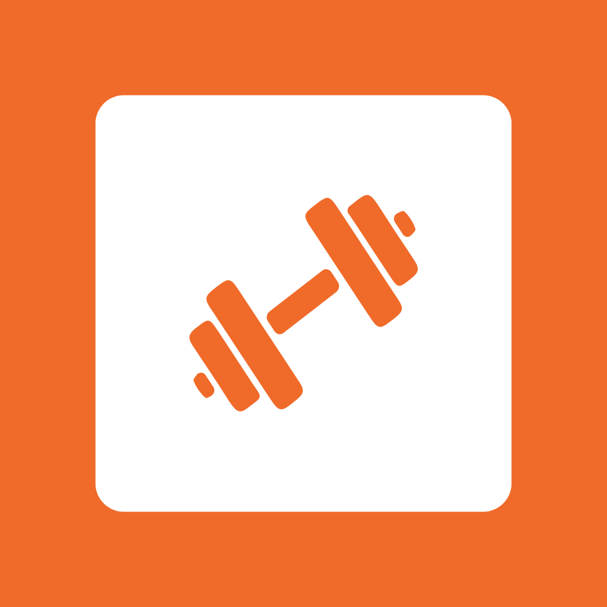

Semana visual
Veja seus treinos por dia, com categorias em destaque e foco rápido no que fazer hoje.

Fitcha Baixar appSua ficha de treino digital
Monte sua semana, registre cargas por série e veja seu progresso por máquina. Tudo em um fluxo simples para usar durante o treino.
Menos improviso
O Fitcha troca a ficha perdida, a anotação solta e a planilha manual por uma rotina organizada: escolha o dia, acompanhe as máquinas, registre o treino e volte depois para ver sua evolução.
Recursos
Veja seus treinos por dia, com categorias em destaque e foco rápido no que fazer hoje.
Inicie o treino do dia, avance máquina por máquina e registre carga, repetições ou tempo.
Acompanhe recordes, últimos registros e comparações para entender onde está evoluindo.
Identifique equipamentos com foto e organize tudo por peito, costas, pernas, core e cardio.
Receba notificações nos dias planejados para manter a constância sem precisar decorar a rotina.
Use o app no visual que combina com seu momento, com preferência salva no dispositivo.
Fluxo
O caminho foi pensado para acompanhar o ritmo da academia: abrir o treino, preencher o que importa e salvar sem atrito.
Fitcha AI
Informe altura, peso, dias disponíveis, intensidade e preferências. O Fitcha monta uma rotina inicial para você ajustar e seguir.
Pronto para treinar melhor?
Organize sua rotina, registre seus treinos e acompanhe a evolução que antes ficava espalhada.
Baixar Fitcha